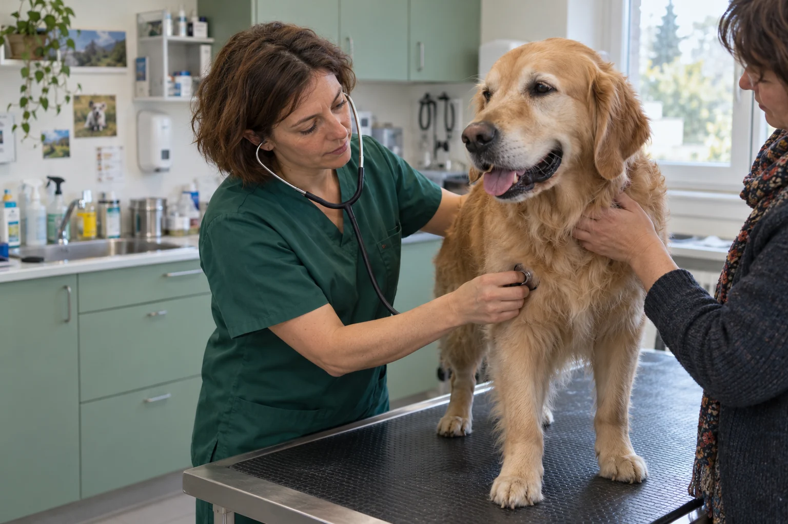

Dr Clara Martin
Médecine générale, prévention et accompagnement des chats anxieux.
À leurs côtés. Aux vôtres aussi.
Votre cabinet vétérinaire à Rennes. Une équipe attentive pour prendre soin de vos compagnons, à chaque étape de leur vie.
Du premier jour aux années qui comptent.
Chiens, chats et petits NAC bienvenus.

LA CONFIANCE COMMENCE PAR L’ÉCOUTEDes horaires pour vousLun–ven · 8h30–19h / Sam · 9h–13h
Tout près de chez vousRennes · Adresse & accès
↗✧Une attention à chacunPrévention, soins & suivi au quotidien
↗BIENVENUE AU CABINET
Parce qu’une visite chez le vétérinaire n’est jamais anodine, nous prenons le temps de faire connaissance. Avec vous, et avec celui qui partage votre quotidien.
Une consultation, c’est aussi le temps de poser vos questions, de comprendre les soins proposés et de repartir avec des repères clairs.
Préparer votre première visite →À CHAQUE ÉTAPE DE SA VIE
Du bilan de santé aux soins plus spécifiques, un accompagnement qui s’adapte à votre compagnon.
Consultations & prévention
Découvrir les soins +Analyses & imagerie
Découvrir les soins +Chirurgie & soins dentaires
Découvrir les soins +DES VISAGES, AVANT TOUT
Deux vétérinaires et une auxiliaire. Une même envie : que vous vous sentiez bien accompagnés.
Médecine générale, prévention et accompagnement des chats anxieux.
Chirurgie courante, imagerie et suivi de la douleur.
Votre premier contact, de l’accueil aux conseils pour préparer votre visite.
UNE PREMIÈRE VISITE ?
Quelques repères pour venir l’esprit plus tranquille.
Préparer notre rencontre ↗Prévoyez son carnet de santé, ses ordonnances et ses derniers résultats d’examens.
Signalez-nous ses appréhensions lors de votre demande. Un panier de transport familier peut aider votre chat.
Nous vous expliquons les prochaines étapes, les soins à la maison et le suivi proposé.
LES INFORMATIONS QUI COMPTENT
12 avenue des Tilleuls
35000 Rennes
Adresse fictive pour cette démonstration.
Appelez le cabinet avant de vous déplacer. Hors ouverture, contactez votre service vétérinaire de garde habituel.
Numéro de démonstration : 02 99 00 00 00PARLONS EN TOUTE TRANSPARENCE
Repères indicatifs TTC pour la démonstration. Un devis est proposé pour les actes programmés.
Les montants varient selon les soins associés, le poids et l’état de santé de votre animal.
ON SE RENCONTRE ?
Choisissez votre motif et vos préférences.
Un rendez-vous doit être confirmé par le cabinet.
Ce formulaire permet de préparer un récapitulatif. Aucune demande n’est envoyée et aucun rendez-vous n’est réservé.
AVANT DE VENIR
Oui, les consultations se font sur rendez-vous pour préparer votre accueil. Pour une urgence, appelez le cabinet avant de venir.
Précisez-le lors de votre prise de contact. Nous pourrons préparer sa visite avec vous et tenir compte de ses habitudes.
Les lapins, cochons d’Inde et furets sont présentés dans cette démonstration. Pour toute autre espèce, une confirmation du cabinet est nécessaire avant la visite.
Les tarifs ci-dessus donnent des repères. Le coût dépend des examens et soins nécessaires. Demandez un devis avant un acte programmé.